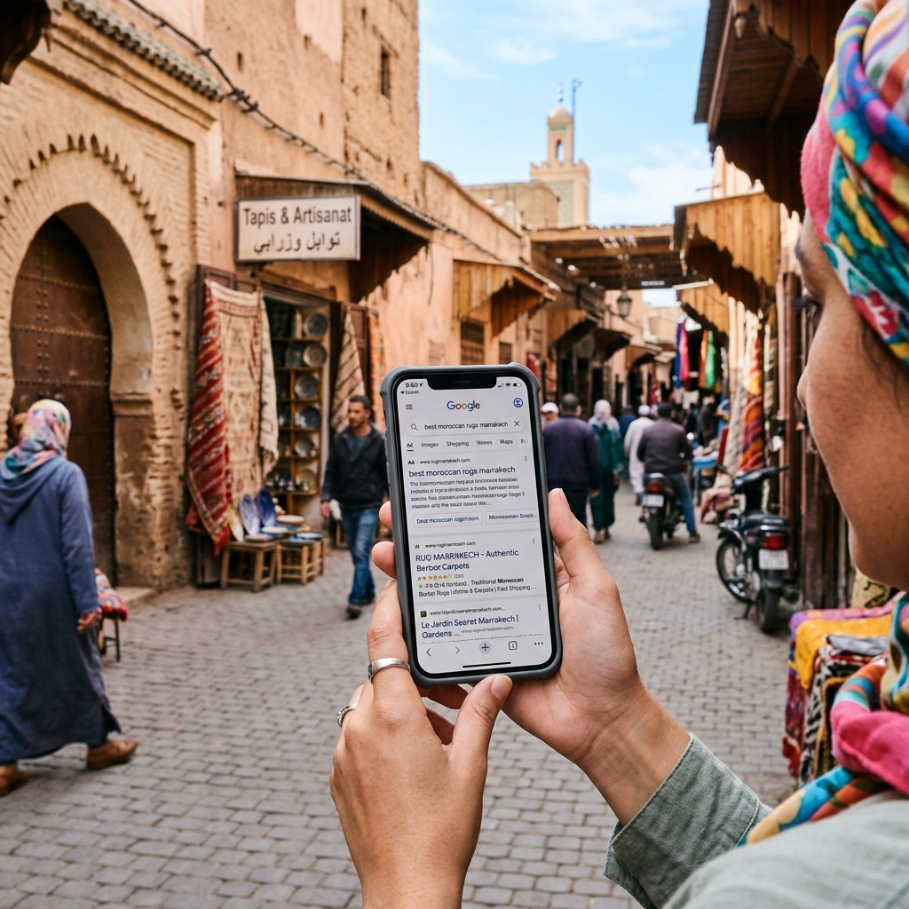

Introduction
Le référencement naturel est complexe et certaines erreurs peuvent ruiner vos efforts. Voici les 10 erreurs SEO les plus fréquentes commises par les sites web marocains.
1. Contenu dupliqué
Évitez de copier le contenu d'autres sites ou de répéter les mêmes textes sur plusieurs pages. Google pénalise le duplicate content.
Quieres aplicar estas estrategias sin esfuerzo? Nuestros expertos de DatRey se encargan.
2. Mauvaise structure des URL
Utilisez des URL courtes et descriptives avec des mots-clés. Exemple : www.monsite.ma/services/seo plutôt que www.monsite.ma/page123.
3. Négliger les balises title et meta description
Chaque page doit avoir un title unique et une meta description optimisée pour inciter au clic.
4. Ignorer le mobile
Au Maroc, la majorité des recherches se fait sur mobile. Assurez-vous que votre site est responsive et rapide.
5. Temps de chargement trop long
Un site lent fait fuir les visiteurs et pénalise votre classement. Optimisez les images et utilisez un hébergement performant.

6. Liens cassés
Les liens morts nuisent à l'expérience utilisateur. Utilisez des outils pour les détecter et les corriger.
7. Mauvaise utilisation des balises heading
Structurez votre contenu avec des H1, H2, H3 pertinents. Un seul H1 par page.
8. Absence de balises alt sur les images
Les balises alt améliorent l'accessibilité et le référencement. Décrivez vos images avec des mots-clés.
9. Ne pas utiliser les données structurées
Les schémas markup aident Google à comprendre votre contenu et peuvent améliorer l'affichage dans les résultats.
10. Négliger la recherche de mots-clés
Sans une bonne stratégie de mots-clés, vous ciblez peut-être les mauvaises requêtes. Utilisez des outils comme Google Keyword Planner.
Conclusion
Éviter ces erreurs vous permettra d'améliorer votre SEO. L'agence DatRey peut vous aider à auditer et corriger votre site.